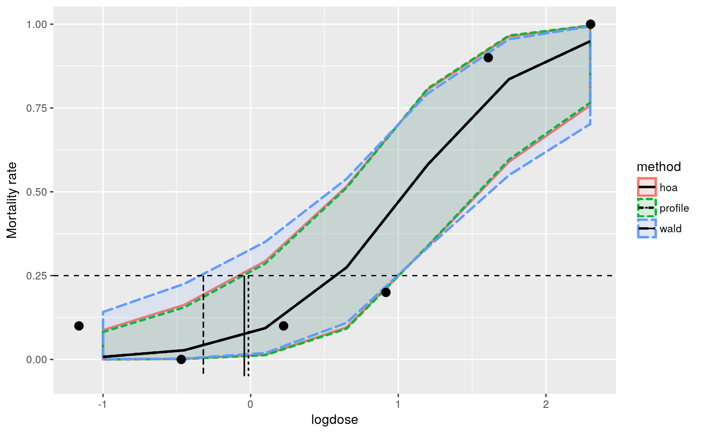

Increasing dose levels of a toxin, used as a pesticide for crop protection, is applied to non-target species. The lethal dose should be identified in this experiment. The dataset represents simulated data based on a real experiment.
data(toxinLD)
A data frame with 6 observations on the following 3 variables.
dosea numeric vector denoting the toxin concentration levels
deada numeric vector with the number of dead insects.
alivea numeric vector with the number of surviving insects.
str(toxinLD)#> 'data.frame': 6 obs. of 3 variables: #> $ dose : num 0.312 0.625 1.25 2.5 5 ... #> $ dead : int 1 0 1 2 9 10 #> $ alive: int 9 9 9 8 1 0############################################### # logistic regression on the logarithmic dose # ############################################### toxinLD$logdose <- log(toxinLD$dose) fm <- glm(cbind(dead, alive) ~ logdose, data=toxinLD, family=binomial(link="logit")) ############# # profiling # ############# # contrast matrix pdose <- seq(-1,2.3, length=7) CM <- model.matrix(~ pdose) # user defined grid to construct profiles mcpgrid <- matrix(seq(-11,8,length=15), nrow=15, ncol=nrow(CM)) mc <- mcprofile(fm, CM, grid=mcpgrid)#> Warning: orglm.fit: fitted probabilities numerically 0 or 1 occurred#> Warning: orglm.fit: fitted probabilities numerically 0 or 1 occurred#> Warning: orglm.fit: fitted probabilities numerically 0 or 1 occurred#> Warning: orglm.fit: fitted probabilities numerically 0 or 1 occurred#################################### ## confidence interval calculation # #################################### # srdp profile ci <- confint(mc) ppdat <- data.frame(logdose=pdose) ppdat$estimate <- fm$family$linkinv(ci$estimate$Estimate) ppdat$lower <- fm$family$linkinv(ci$confint$lower) ppdat$upper <- fm$family$linkinv(ci$confint$upper) ppdat$method <- "profile" # wald profile wci <- confint(wald(mc)) wpdat <- ppdat wpdat$estimate <- fm$family$linkinv(wci$estimate$Estimate) wpdat$lower <- fm$family$linkinv(wci$confint$lower) wpdat$upper <- fm$family$linkinv(wci$confint$upper) wpdat$method <- "wald" # higher order approximation hci <- confint(hoa(mc)) hpdat <- ppdat hpdat$estimate <- fm$family$linkinv(hci$estimate$Estimate) hpdat$lower <- fm$family$linkinv(hci$confint$lower) hpdat$upper <- fm$family$linkinv(hci$confint$upper) hpdat$method <- "hoa" # combine results pdat <- rbind(ppdat, wpdat, hpdat) ##################################### # estimating the lethal dose LD(25) # ##################################### ld <- 0.25 pspf <- splinefun(ppdat$upper, pdose) pll <- pspf(ld) wspf <- splinefun(wpdat$upper, pdose) wll <- wspf(ld) hspf <- splinefun(hpdat$upper, pdose) hll <- hspf(ld) ldest <- data.frame(limit=c(pll, wll, hll), method=c("profile","wald", "hoa")) ################################ # plot of intervals and LD(25) # ################################ ggplot(toxinLD, aes(x=logdose, y=dead/(dead+alive))) + geom_ribbon(data=pdat, aes(y=estimate, ymin=lower, ymax=upper, fill=method, colour=method, linetype=method), alpha=0.1, size=0.95) + geom_line(data=pdat, aes(y=estimate, linetype=method), size=0.95) + geom_point(size=3) + geom_hline(yintercept=ld, linetype=2) + geom_segment(data=ldest, aes(x=limit, xend=limit, y=0.25, yend=-0.05, linetype=method), size=0.6, colour="grey2") + ylab("Mortality rate")#> Warning: Ignoring unknown aesthetics: y